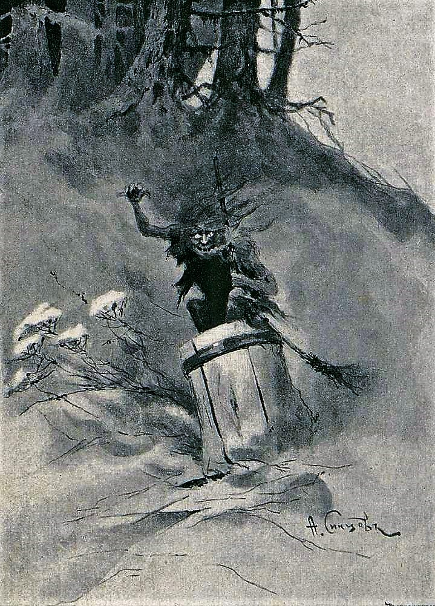

Baba Jaga
Via Wikipedia — "Baba Yaga"; image per Wikimedia Commons
Baba Jaga
She is the witch who lives in a hut that walks on chicken legs, who devours the unwary and yet gifts heroes with magical horses. She is the bone-legged, iron-toothed grandmother of the forest, the guardian of the thresho
She is the witch who lives in a hut that walks on chicken legs, who devours the unwary and yet gifts heroes with magical horses. She is the bone-legged, iron-toothed grandmother of the forest, the guardian of the threshold, the archetype of the wild and the wise. Baba Yaga is not a single story; she is a thousand stories, each one a doorway into the dark, fertile heart of Slavic folklore.
Baba Yaga is profoundly ambivalent. She can be a cannibalistic ogress who threatens to eat children, or a wise and helpful elder who offers magical gifts and guidance to the worthy hero. Her behavior is often unpredictable and depends on the tale and the protagonist's demeanor. She may test the hero, set impossible tasks, or provide crucial information. She is often portrayed as a guardian of the threshold between the world of the living and the dead, and she may be served by invisible hands or by her own animal companions (like the cat, dog, or raven).
Full dossier — 5 stories · 5 kin · 6 powers
Etymology — The name 'Baba Yaga' is of Slavic origin. 'Baba' is a common Slavic word for 'old woman' or 'grandmother', but in this context carries a more archaic and formidable connotation. 'Yaga' is more obscure; it may derive from the Proto-Slavic *ęgа, related to 'anguish' or 'horror', or from the Old Russia
Pronunciation — BAH-bah YAH-gah (Russian and most Slavic languages); the 'g' is hard, as in 'go'.
Aliases — Baba Jaga, Ježibaba, The Bone-Legged Witch, Baba Jaga, Baba Iaga, Baba Yaga the Witch
Ownership — Pan-Slavic, with strongest presence in Russian, Ukrainian, Belarusian, and Polish folklore. She is a liminal figure of the forest, dwelling on the border of the known world and the
Names are cult layers, not one fixed label.
Names & forms
Epithets are cult titles, not separate beings.
| Form | Context | Archive treatment |
|---|---|---|
| Baba Yaga | Canonical | Headword |
From first attestation to now
| Period | Source | What survives |
|---|---|---|
| Archaic | Primary evidence | First attestations |
| Classical | Literary | Canonical stories |
| Reception | Modern | Adaptations |
Chronology is layering, not biography.
Culture → reception
| Culture | Evidence | Note |
|---|---|---|
| Pan-Slavic, with strongest presence in R | Primary | See citations |
She flies through the air in a mortar, propelling herself with a pestle and sweeping away her tracks with a broom. This is a signature method of travel, emphasizing her otherworldly nature.
Limit: She is often depicted as being able to be outsmarted or evaded by a clever hero.
She can transform into animals or other forms, though this is less emphasized than her flight.
Limit: Not always specified; may be limited to certain forms.
She commands the wind, the forest, and its animals. She may call upon her servants (invisible hands, the cat, the dog, the raven) to perform tasks.
Limit: Her power is often bound to her hut and her domain; she may be weakened or neutralized if her hut is destroyed or if she is deceived.
She possesses secret knowledge of the dead, the future, and the location of magical objects. She can guide the hero or set them on a quest.
Limit: Her knowledge is often conditional; she may demand a service or a test in return.
In many tales, she threatens to eat children or unwary travelers. She may try to lure them into her oven.
Limit: She is frequently outwitted by her intended victims, who may push her into the oven instead.
She is an ancient being, seemingly ageless. She is not depicted as dying of natural causes, though she can be destroyed through trickery (e.g., thrown into the oven, drowned in a river of fire).
Limit: She is not invulnerable; she can be defeated.
Appearance — Baba Yaga is typically depicted as a gaunt, haggard old woman with a long, hooked nose, iron teeth, and bony legs. She is often described as having a 'bone leg' (костяная нога), which is a key identifier. Her hair is wild and unkempt, and she may be covered in soot or dirt. She flies through the air in a mortar, using a pestle as a rudder, and sweeps away her tracks with a broom. Her hut stands on chicken legs and is surrounded by a fence made of
Symbols — Key symbols: the mortar and pestle (her mode of transport and a symbol of grinding, transformation, and the cycle of life and death), the broom (sweeping away the past, clearing a path), the chicken-legged hut (a liminal dwelling between worlds), the fence of bones and skulls (marking the boundary of the otherworld), fire (both destructive and purifying), and the number three (she often appears in trios, or the hero must pass three tests).
Domains — Her primary domain is the deep, dark forest, a liminal space that separates the village from the unknown. Her hut, which stands on chicken legs, can rotate or move, and it is often described as having no windows or doors facing the conventional world, with the entrance facing the 'other side'. She is also associated with the bathhouse (a place of purification and transformation), the hearth, and the mortar/pestle as symbols of transform
Collected in the 19th century, oral tradition likely older
Vasilisa, a kind girl, is sent by her wicked stepmother to fetch fire from Baba Yaga. Baba Yaga sets her impossible tasks, but Vasilisa is aided by a magical doll given to her by her dying mother. Baba Yaga, impressed by Vasilisa's success, gives her a skull with burning coals, which she uses to burn her stepmother and stepsisters to ashes, and then returns to live peacefully. Vasilisa's triumph over the stepmother and her rise in fortune (she later marries the Tsar).
Collected in the 19th century
Ivan Tsarevich marries a frog who is actually a beautiful princess under a curse. She proves her worth by performing incredible tasks, but Ivan burns her frog skin, forcing her to flee to the kingdom of Koshchei the Deathless. Ivan must then travel to the otherworld to rescue her, and along the way he encounters Baba Yaga, who helps him find the way and gives him a magical horse to defeat Koshchei. Ivan defeats Koshchei, rescues the princess, and they live happily ever after.
Collected in the 19th century
Ivan Tsarevich marries Maria Morevna, a warrior princess. He accidentally frees Koshchei the Deathless, who kidnaps Maria. Ivan goes on a quest to rescue her. He encounters Baba Yaga three times, each time she gives him a magical horse of increasing power, enabling him to finally catch and kill Koshchei. Ivan kills Koshchei and rescues Maria.
Collected in the 19th century
A merchant's son, Ivan, is promised to the Sea King by his father. The Sea King takes him to the underwater kingdom and sets him impossible tasks. Vasilisa the Wise, the Sea King's daughter, helps him complete the tasks, and they escape together. Baba Yaga is not a central figure in this tale, but variants may include her as a guide. Ivan and Vasilisa escape and marry.
Collected in the 19th century
A youth is lured to Baba Yaga's hut, where she attempts to cook and eat him. He outwits her, often by pushing her into the oven or tricking her into showing him how to get out, and then escapes, sometimes with her treasures or magical objects. The youth escapes, often with a reward, and Baba Yaga is defeated or humiliated.
| Name | Type | Relation |
|---|---|---|
| ambiguous (ally or rival) | ||
| tester/helper | ||
| helper/guide | ||
| counterpart/foil | ||
| prey |
| Topic | Position A | Position B |
|---|---|---|
| Benevolent vs. Malevolent | Baba Yaga is a malevolent, cannibalistic witch who preys on children. | Baba Yaga is a wise, helpful elder who aids heroes and rewards the worthy. |
| Identity as a Goddess | Baba Yaga is a remnant of an ancient Slavic goddess of death or the underworld. | She is a purely folkloric figure, a composite of various witch and ogress archetypes, with no direct divine origin. |
| Her Relationship to Koshchei the Deathless | She is his mother, aunt, or other relative. | They are independent figures with no fixed relationship. |
Baba Yaga is purely evil. — She is profoundly ambivalent. She can be a helper, a tester, or a threat, depending on the tale and the protagonist's actions.
She is a 'witch' in the Western European sense of a follower of Satan. — She is a folkloric being, not a Christian devil-worshipper. Her powers are innate and tied to the natural and otherworldly realms, not to a pact with a devil.
Her hut always has chicken legs. — The chicken-legged hut is a common feature, but not universal. Some tales describe her dwelling as a simple hut in the forest, or a house on a border.
She is a single, fixed character. — She is a type, with many regional variants and individual tale variations. There is no 'canonical' Baba Yaga.
Sources & gaps
| Author | Title | Year |
|---|---|---|
| Afanasyev, Alexander | Russian Fairy Tales | 1855-1863 |
| Propp, Vladimir | Morphology of the Folktale | 1928 |
| Ralston, W.R.S. | Russian Folk-Tales | 1873 |
| Warner, Elizabeth | Russian Myths | 2002 |
| Bilibin, Ivan | Illustrations for Russian Fairy Tales | Early 20th century |
| Valente, Catherynne M. | Deathless | 2011 |
| Arden, Katherine | The Bear and the Nightingale | 2017 |
| Ugrešić, Dubravka | Baba Yaga Laid an Egg | 2009 |
Gaps: Extensive research is available, but primary source access to the original Afanasyev collection in Russian is limited in this environment. Direct consultation of critical editions and scholarly articles in Slavic languages would deepen the analysis. The full range of regional variants (e.g., Polish, Czech, Ukrainian) is not exhaustively covered here. The history of her depictio
Via Wikipedia — "Baba Yaga"; dossier 5 stories, 5 relations. Lilith 118386 is the example.